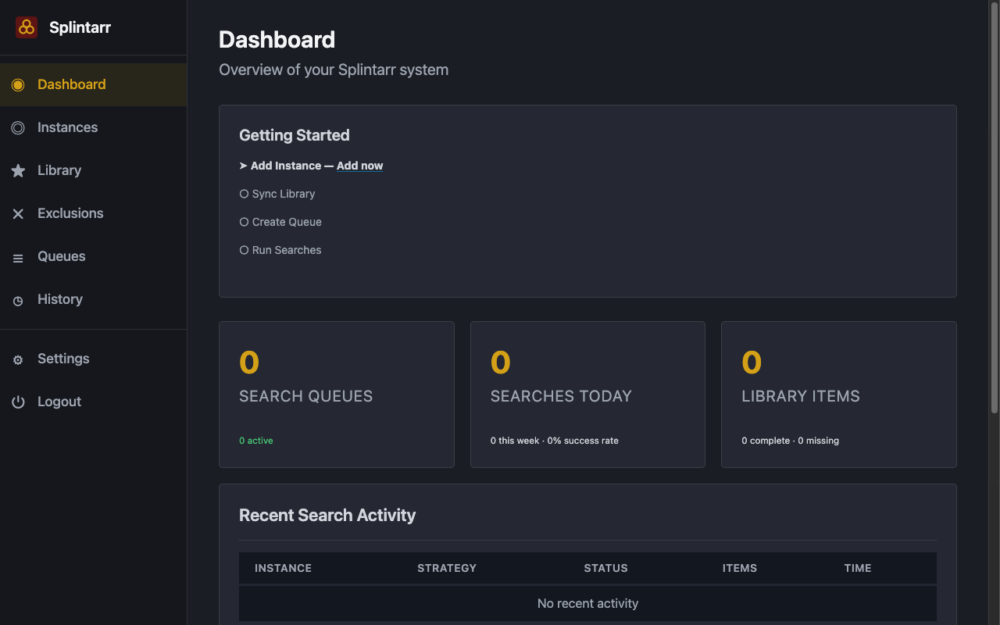
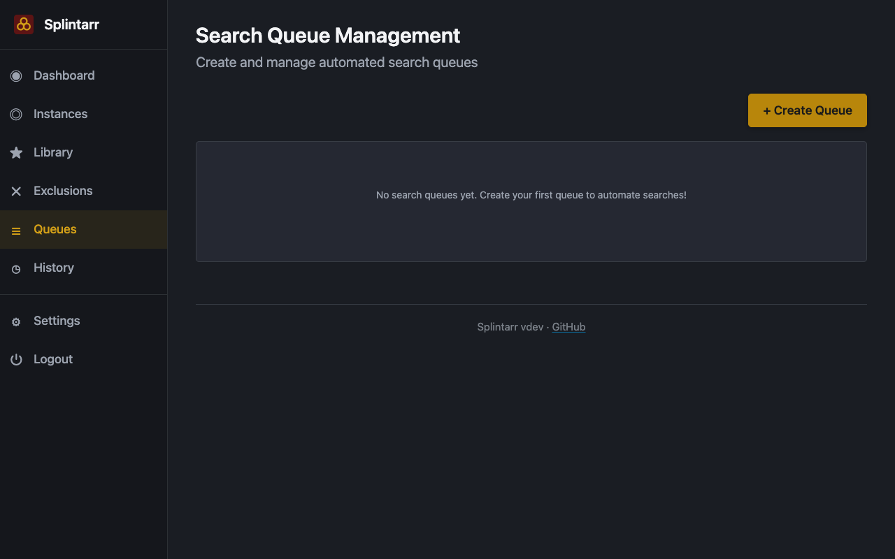
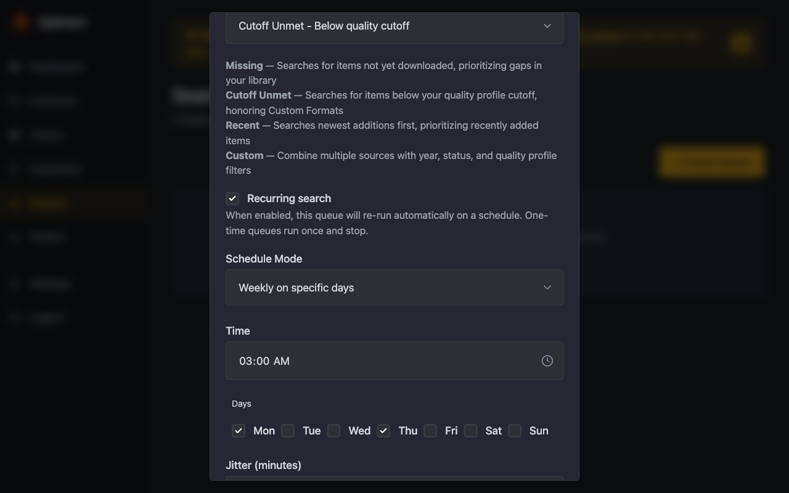
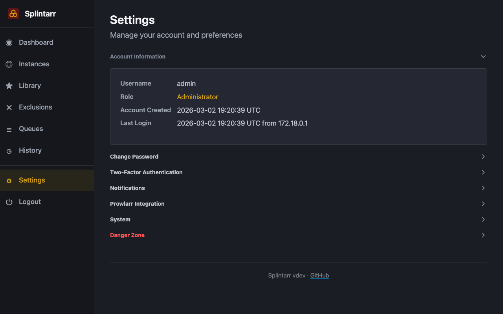
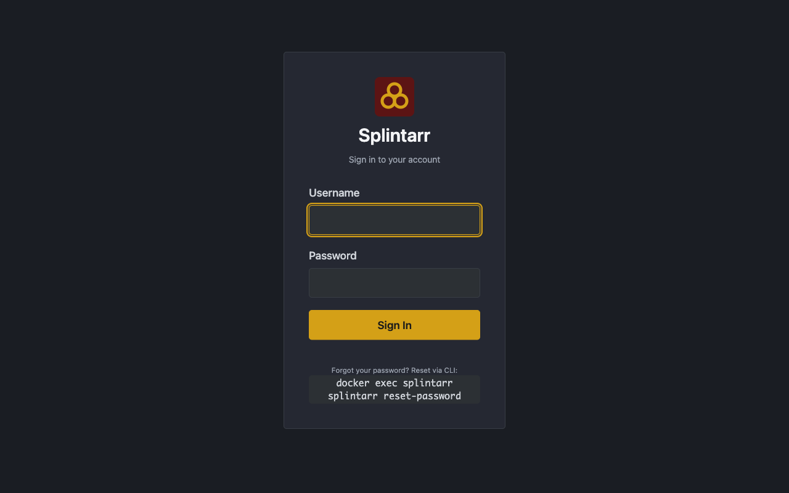

Sonarr's RSS feeds handle new releases, but your backlog just sits there. Splintarr searches it for you, a few items at a time, on a schedule, without getting you banned from indexers.

Each run scores items by recency, past attempts, and time since last search. Content that never downloads gets searched less often. Content that just aired gets searched first.
Every N hours, daily at a set time, or on specific days. Random jitter keeps queues from all firing at once. Batch sizes shrink when indexer budgets run low.
Connects to Prowlarr to see which indexers you have and how much API budget is left. Shows usage as progress bars on the dashboard. Groups missing episodes into season pack searches when it makes sense.
Watch searches run in real time. See which series are closest to complete. Check the last 7 days of search activity and grab rates. Updates over WebSocket, no refreshing.
Encryption at rest, encrypted credentials, hashed passwords, SSRF protection, CSP nonces, rate limiting. Seven review cycles. Details in the security guide.
One container. No Redis, no Postgres, no separate workers. The database is a single encrypted file in a mounted volume. Runs as a non-root user with a read-only filesystem.




git clone https://github.com/menottim/splintarr.git
cd splintarr
./scripts/setup.sh --auto-start
open http://localhost:7337
Create an admin account, paste your Sonarr URL and API key, done.
Strategy: Missing
Schedule: Daily at 02:00
Batch: 50 items
Pick a preset or set your own schedule. It runs in the background from there.